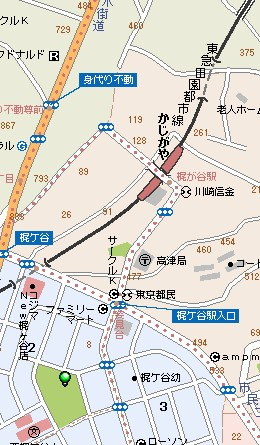
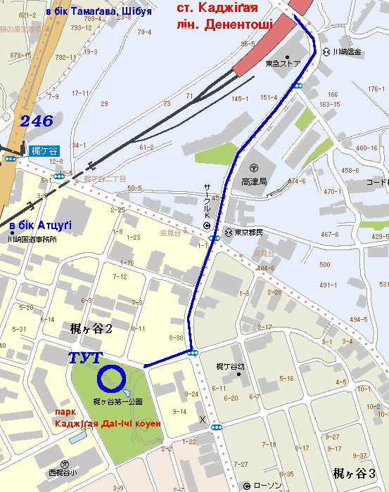

парк Каджіґая
Table of contents
Добратися до парку:
Електричкою
|
Машиною
|
Мапи, схеми

Ще одна більш детальна схема

Фото
Кілька фото парку з альбому Краян (цвіт сакури, ханамі, в 2003 році) за цією ссилкою:
http://yarylo.sytes.net/galereya/gallery/hanami_kajigaya
Створений : dmytro.
останні зміни: Середа 20 з April, 2005 13:57:59 JST dmytro.
Оригінал документу знаходиться на http://tiki/tiki/tiki-index.php?page=%D0%BF%D0%B0%D1%80%D0%BA%20%D0%9A%D0%B0%D0%B4%D0%B6%D1%96%D2%91%D0%B0%D1%8F